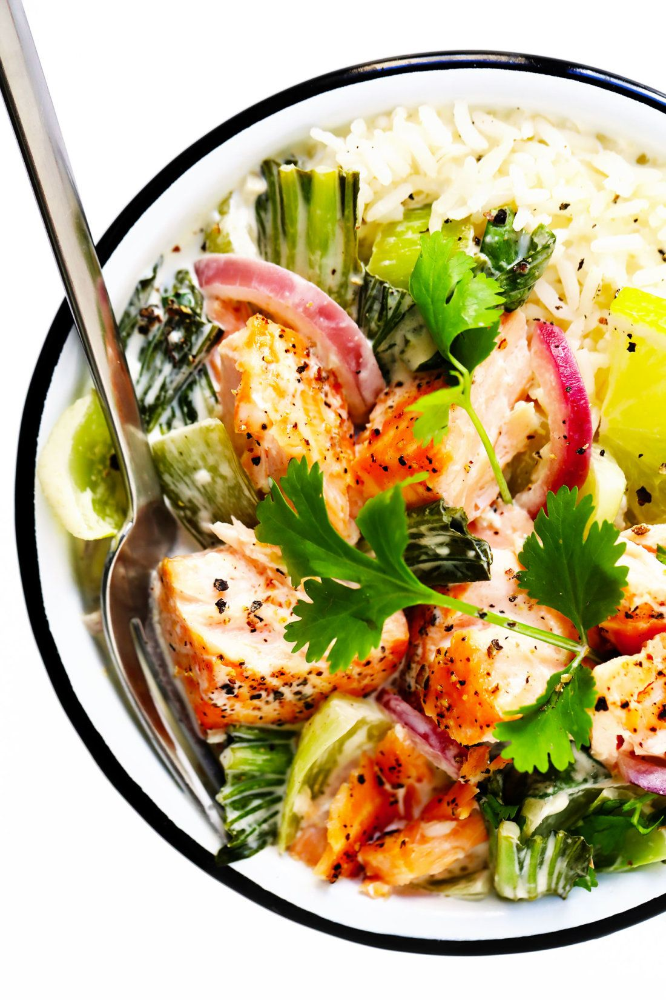

Green Coconut Curry Salmon

This one skillet salmon dish provides awesome nutrients and intense curry flavor!
Coconut milk and coconut sugar combine to make this all around healthy curry sauce shine. You won't fill guilty filling a bowl with this curry and soaking it all up with some rice. Not to mention the flavor of the salmon and veggies that just soak it all up.
Ingredients
Curry Sauce
- 1 (13.5 oz.) can of unsweetened coconut milk
- 1 tbsp. green curry paste/li>
- 1 clove minced garlic
- 1 tbsp. fresh lime juice
- 1 tbsp. fish sauce
- 1 tsp. freshly grated ginger
- 2 tsp. coconut sugar
Salmon and Veggies
- 4 (4 oz.) wild caught salmon filets, skin removed
- 1/2 tsp sea salt
- 1/2 tsp freshly ground black pepper
- 1 small, thinly sliced, sweet onion
- 1 cored and thinly sliced red bell pepper
- 1 cored and thinly sliced green bell pepper
- 3-4 chopped green onions
- fresh cilantro for garnish
- 2 cups cooked jasmine rice (or riced cauliflower)
Steps:
- Preheat oven to 375
- Cook jasmine rice per package instructions or prepare cauliflower rice.
- Season salmon fillets with salt and pepper and set aside.
- In an oven proof skillet, whisk curry paste into coconut milk over medium heat until fully combined. Add in lime juice, ginger, fish sauce, and coconut sugar, along with onions and peppers. Allow to simmer for 5 minutes, stirring occasionally.
- Set prepared salmon into the curry mixture and transfer pan to oven. Allow to cook for 10-12 minutes until salmon is just cooked through.
- Serve over jasmin or cauliflower rice topped with cilantro and green onions.
- Enjoy!